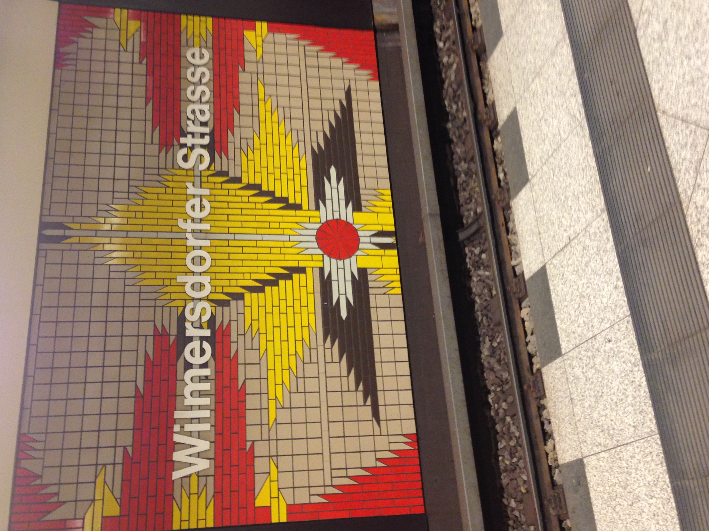

When people ask me what I miss the most about Berlin, chances are I'm going to say the public transportation. Yes, I'm fully aware how silly that sounds, but it's true!
Like many Americans, I hardly ever use public transportation. I have access to a vehicle, so why would I? When you study abroad, you are kind of forced to use it. After 4 months of using the subways and trains and buses to get literally anywhere, I miss it. I still remember exactly how to get to Die Neue Schüle (DNS) and my internship!
A bit of advice from someone who learned the hard way… On this program, you have to purchase your monthly tickets from the BVG. You have to buy them. Do not think for one second that you can get away with not having them, because you will regret it. Before you walk out of your host family's house, you better check you have it, because if they catch you, you will be fined 60€. And there is no way of getting around it. I stress this because I was of the two people in my group who was unfortunately caught with an expired ticket.
After my morning class, if I didn’t have an afternoon class, I spent my time exploring the city. One of my favorite areas was Friedrichstraße. Although it is a major tourist hub, there was so much to see and do, including the giant bookstore, Dussmann.
Another place is Zoologischer Garten. This area was only 2 stops away from me on the S-Bahn, so when I was bored and didn’t feel like going far, this is where I went.